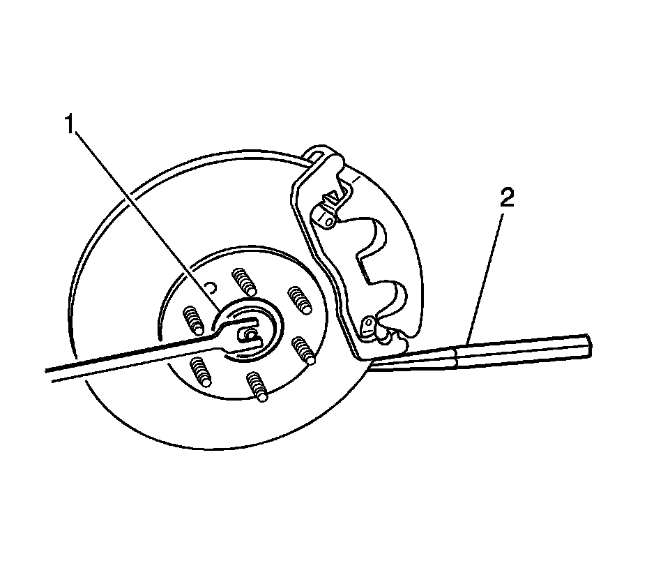
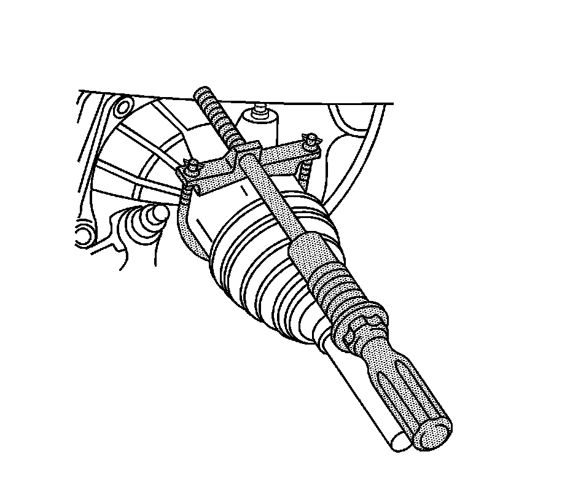
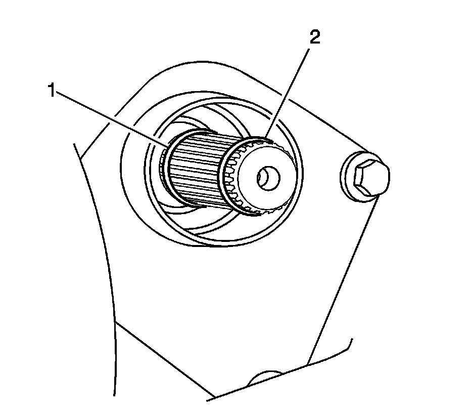

Front Wheel Drive Shaft Replacement - Left
Front Wheel Drive Shaft Replacement - Left Side
Tools Required
* J 2619-O1 Slide Hammer With Adapter
* J 29794 Extension
* J 45341 Axle Shaft Puller
* J 45859 Wheel Hub Remover
Removal Procedure

1. Raise and support the vehicle. Refer to Lifting and Jacking the Vehicle (Service and Repair) .
2. Remove the front tire and wheel assembly. Refer to Tire and Wheel Removal and Installation (Service and Repair) .
3. Disconnect the outer tie rod end from the steering knuckle. Do NOT loosen the tie rod end nut. Refer to Rack and Pinion Outer Tie Rod End Replacement (Service and Repair) .
4. Insert a drift or punch (2) into the brake rotor and against the brake caliper mounting bracket in order to prevent the wheel hub and bearing from turning.
Important: The wheel drive shaft spindle nut must not be reused. Replace the wheel drive shaft spindle nut with a new nut whenever it is removed.
5. Remove and discard the wheel drive shaft spindle nut (1) retaining the wheel drive shaft to the hub.

Important: Be sure that the wheel speed sensor wiring harness is repositioned away from the ball joint after disconnecting the electrical connector from the sensor.
6. Disconnect the electrical connector from the wheel speed sensor and reposition the wiring harness away from the ball joint.
7. Disconnect the upper ball joint from the steering knuckle. Refer to Shock Module Replacement (Front Suspension Shock Absorber) .

8. Install the J 45859 , CJ129 Universal Hub Puller Snap-on, 7394 Universal Hub Puller OTC, or equivalent onto the wheel hub and secure with wheel nuts.
Important: Be sure to support the wheel drive shaft until it is fully removed from the vehicle.
Important: It is not necessary to completely remove the wheel drive shaft from the vehicle if serving other suspension or wheel line components.
9. Using the J 45859 , CJ126 Universal Hub Puller Snap-on, 7394 Universal Hub Puller OTC, or equivalent carefully disengage the wheel driveshaft from the wheel bearing/hub.
10. Remove J 45859 , CJ126 Universal Hub Puller Snap-on, 7394 Universal Hub Puller OTC or equivalent from the wheel hub.

11. Assemble the J 2619-O1 , the J 29794 , and the J 45341 .
12. Install J 45341 to the wheel drive shaft inner joint pull groove.
13. Using the J 2619-O1 , the J 29794 , and the J 45341 , or an equivalent tool disengage the wheel drive shaft from the intermediate wheel drive shaft.

14. Remove the front wheel drive shaft from the vehicle.
15. Remove the J 2619-O1 , the J 29794 , and the J 45341 from the wheel drive shaft inner joint.
16. If reusing the intermediate wheel drive shaft remove and discard the wheel drive shaft retaining ring (2) from the intermediate shaft retaining ring groove. The wheel drive shaft retaining ring is on the splined end of the shaft.
17. If reusing the intermediate wheel drive shaft remove and discard the wheel drive shaft O-ring (1) from the O-ring groove. The O-ring is on the splined end of the shaft.
Installation Procedure
1. Install a new O-ring (1) to the intermediate wheel drive shaft O-ring groove.
2. Install the new wheel drive shaft retaining ring (2) to the retaining ring groove. The intermediate wheel drive shaft retaining ring groove is on the splined end of the shaft.
3. Apply a small amount of grease GM P/N 01051344 (Canadian P/N 993037) or equivalent to the intermediate wheel drive shaft splines.
4. Install the front wheel drive shaft to the intermediate wheel drive shaft.
5. Verify that the front wheel drive shaft is properly engaged to the intermediate wheel drive shaft by grasping the inner joint housing and pulling outward. Do not pull on the wheel drive shaft bar.
The wheel drive shaft will remain firmly in place when properly engaged.
6. Install the wheel drive shaft to the hub and bearing.
7. Install the upper ball joint to the steering knuckle. Refer to Shock Module Replacement (Front Suspension Shock Absorber) .
8. Connect the wheel speed sensor electrical connector.
Important: Ensure that the drive shaft seals do not have any abrasions, cuts, or punctures.
9. Loosely install the NEW wheel drive shaft spindle nut.
10. Insert a drift or punch (1) into the rotor and against the caliper mounting bracket in order to prevent the hub and bearing from turning.
Notice: Refer to Fastener Notice (Fastener Notice) .
11. Use the new wheel drive shaft spindle nut to slowly pull the spindle to the wheel hub and bearing assembly.
Tighten the wheel drive shaft spindle nut to 160 N.m (118 lb ft).
12. Connect the outer tie rod end to the steering knuckle. Refer to Rack and Pinion Outer Tie Rod End Replacement (Service and Repair) .
13. Install the tire and wheel assembly. Refer to Tire and Wheel Removal and Installation (Service and Repair) .
14. Lower the vehicle.